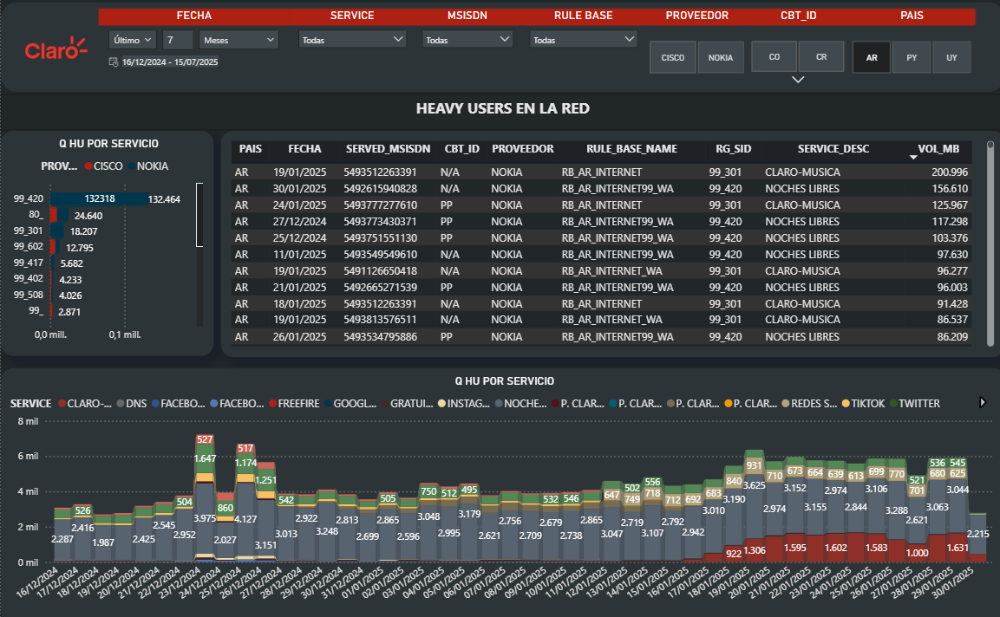
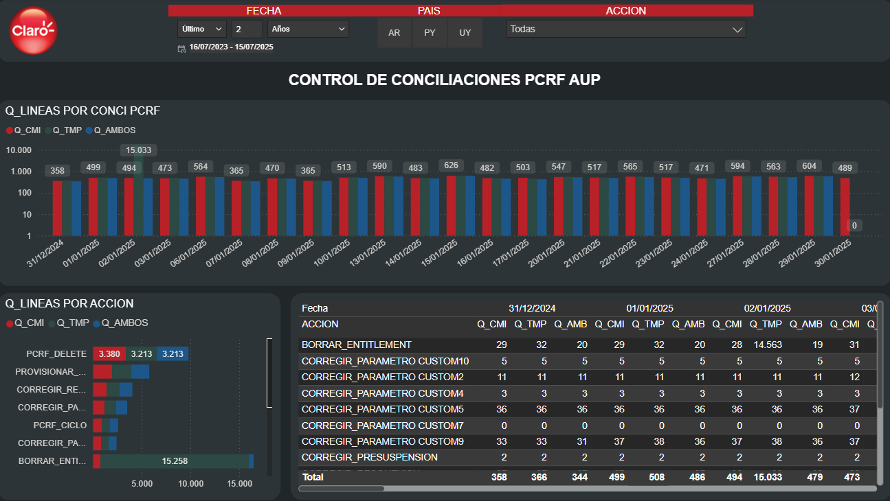
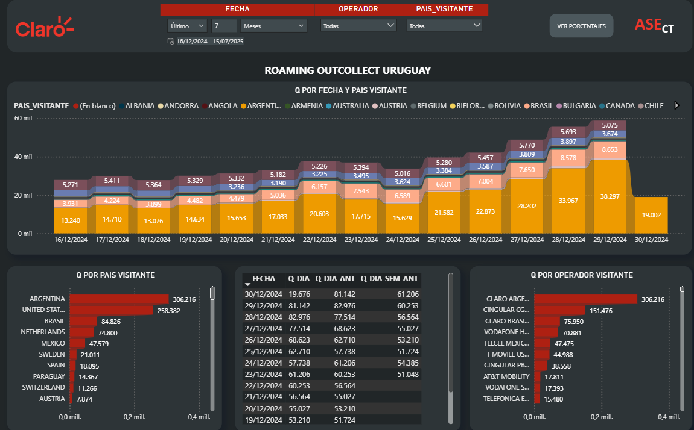

Analista de Datos Senior con experiencia en fintech y telecomunicaciones. Transformo grandes volúmenes de datos en decisiones estratégicas con impacto real en revenue.
Soy Analista de Datos con más de 4 años de experiencia en entornos de alta complejidad técnica y presión de negocio, trabajando en fintech y telecomunicaciones.
Mi trabajo en Claro AMX (Gerencia de Aseguramiento de Ingresos) me permitió desarrollar sistemas de detección de fraude en tiempo real que procesaban ~3 TB de tráfico diario, coordinando con Ingeniería, Marketing y Directorio.
En el mundo fintech, trabajé para dLocal (pagos en +40 mercados emergentes) y Mercado Pago México, desarrollando controles financieros y análisis de comportamiento con foco en revenue y retención.
Me apasiona construir sistemas analíticos que se sostienen solos: automatizados, escalables y con narrativa clara para stakeholders técnicos y no técnicos.

Control y visualización de usuarios con alto volumen de tráfico en la red de Claro (Argentina, Paraguay, Uruguay), segmentados por servicio, proveedor y configuración técnica. Actualización automática con detección de anomalías de consumo.

Tablero que automatiza la conciliación de configuraciones de líneas móviles en red, comparando dos fuentes de control (CMI vs TMP) y clasificando por tipo de acción, con filtros por fecha, país y tipo de anomalía.

Monitoreo diario de líneas extranjeras conectadas a la red de Claro Uruguay en modo roaming, con análisis por país de origen y operador. Comparativas diarias y distribución porcentual del tráfico entrante.
Abierto a oportunidades en análisis de datos, business intelligence y optimización de procesos. Basado en Córdoba, Argentina.